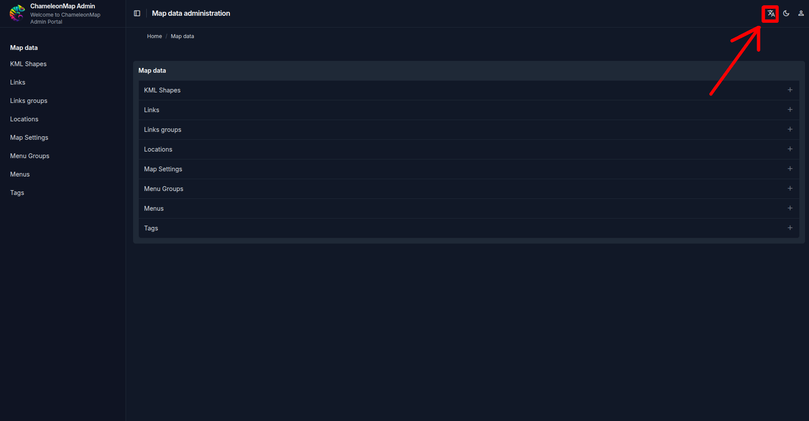
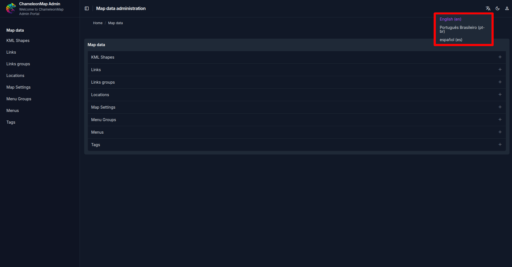
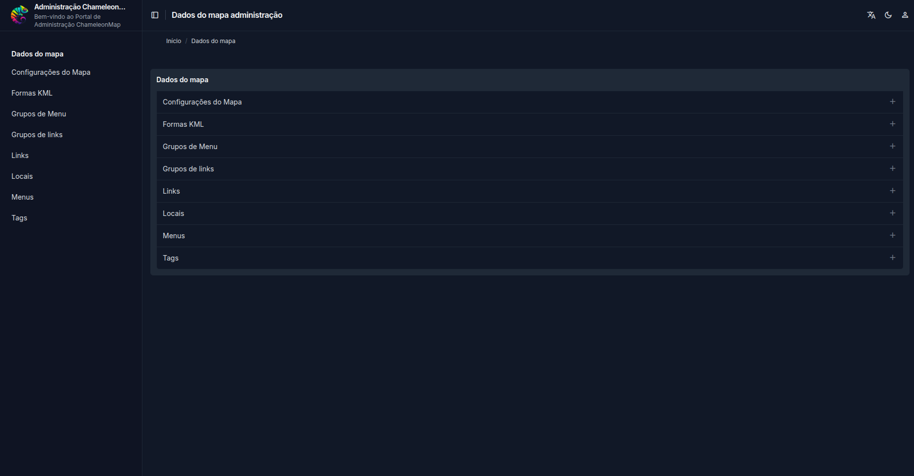

ChameleonMap supports changing the language of the system interface directly from the application header. This setting translates the fixed texts of the interface, such as menus, page titles, breadcrumbs, form labels, buttons, and administrative navigation items.
Scope: This section explains how to change the system interface language. It is different from User Data Translations, which controls content created by administrators and users, such as menu groups, links, labels, and map data.
The language selector is located in the upper-right corner of the ChameleonMap interface. It is represented by the translation icon in the header, next to the theme and user account controls.

Click the translation icon to open the language menu. The available interface languages are displayed as selectable options.
The language menu currently includes:


| Interface Area | Expected Behavior |
|---|---|
| Header and page titles | Page titles and breadcrumb labels are shown in the selected language. |
| Side navigation | Administrative menu entries are translated, such as Map data, Map Settings, Locations, and Menus. |
| Forms and controls | Fixed labels, buttons, and system messages follow the selected interface language when translations are available. |
The system interface language and user data translations work together, but they affect different types of text.
| Feature | Controls | Example |
|---|---|---|
| System interface language | Native ChameleonMap interface text. | The administrative label Map data changes to Dados do mapa. |
| User data translations | Content created through the administrative interface. | A custom menu group, link title, or map label changes according to its configured translations. |
Important: Changing the system language does not automatically translate user-entered map data. To translate administrator-created content, configure and review User Data Translations.